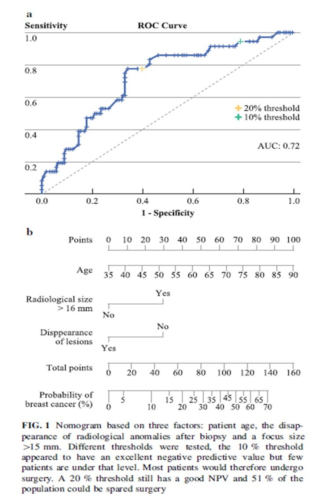

Algorithme NOMAT
Outil d’aide à la décision pour les lésions B3 du sein, basé sur trois critères : âge, taille radiologique de la lésion et disparition de la cible radiologique après biopsie.
Seuil proposé : désescalade possible si le risque estimé de cancer associé est ≤ 10 %.

Interprétation
On additionne les points correspondant aux trois critères. Le total est converti en probabilité estimée de cancer associé. Une désescalade peut être discutée lorsque le risque estimé est inférieur ou égal à 10 %.